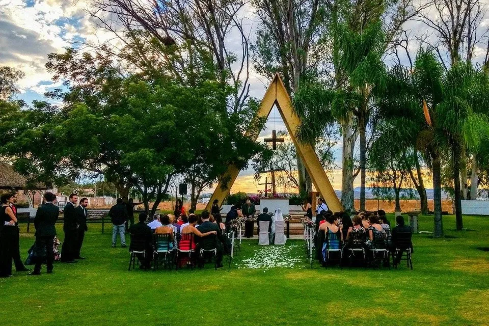
01
La capilla
Altar en A, pasto y cielo abierto.
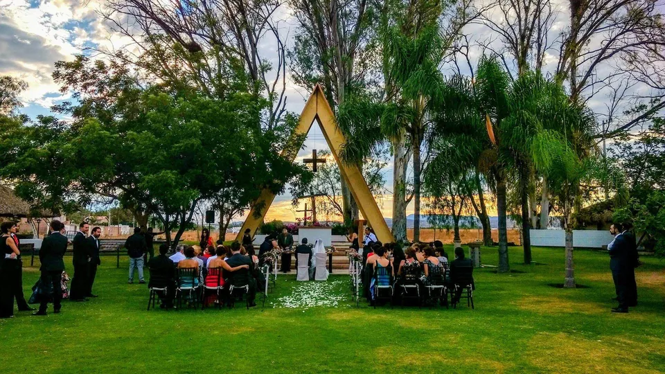
Jardín de eventos · San Ignacio, Ags.
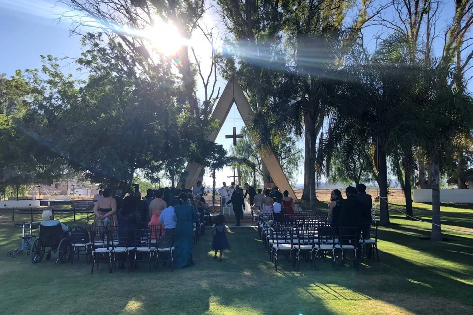
Los rincones

Altar en A, pasto y cielo abierto.
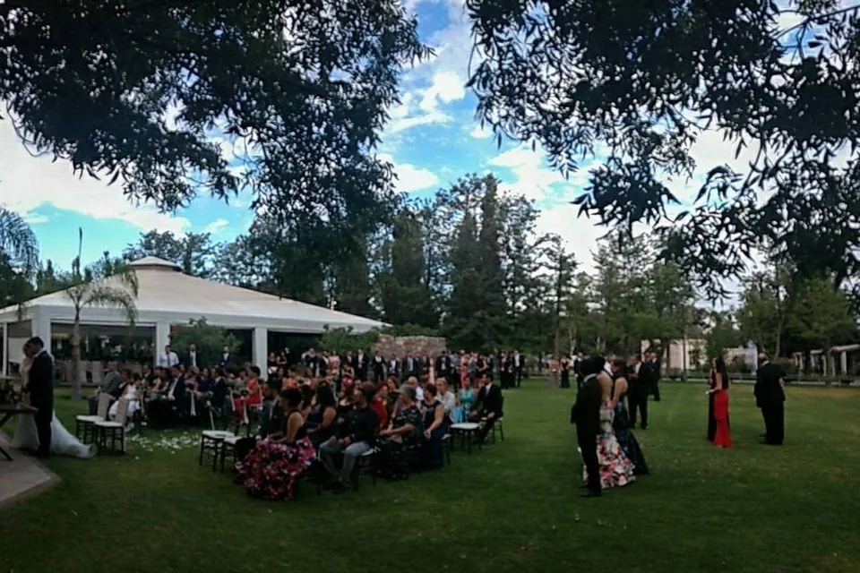
Áreas verdes, palapa y zona de niños.
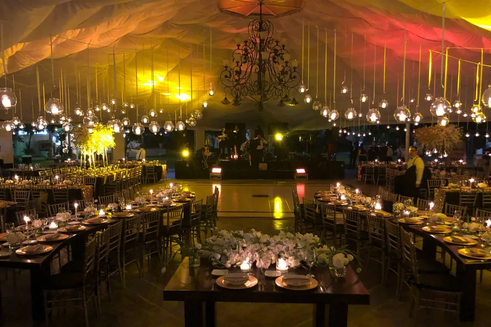
Mesas largas, velas y luces colgantes.
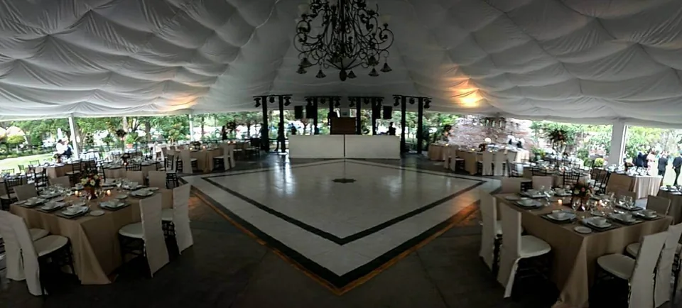
Piso de baile al centro de todo.
Qué se renta
La renta del jardín dura 9 horas. Lo demás lo eliges tú.
Bodas · XV años · Bautizos · Primeras comuniones · Graduaciones · Baby showers · Cumpleaños · Aniversarios · Posadas · Eventos de empresa
Pedir precios por teléfonoLas nueve horas
Elige qué quieres vivir. La barra se llena con tus 9 horas de jardín.
Fotos del jardín
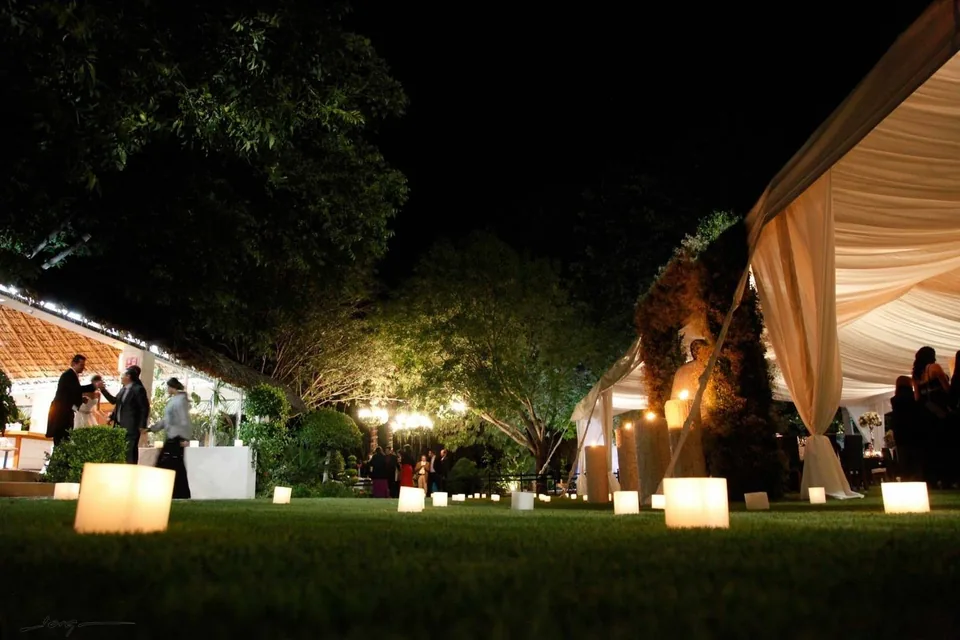
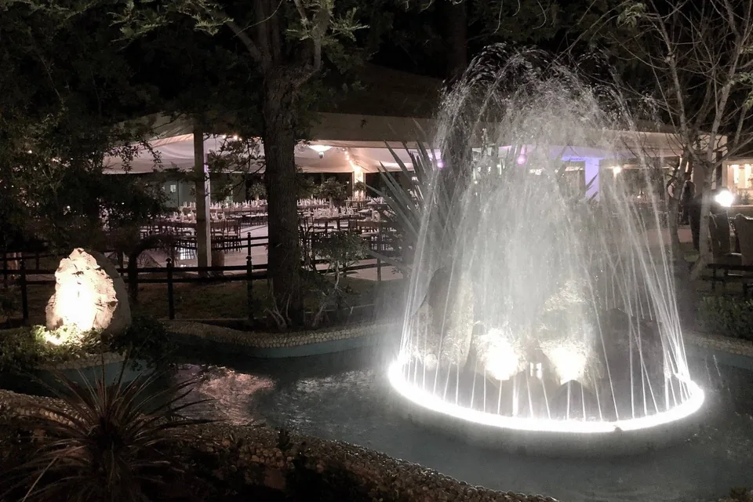
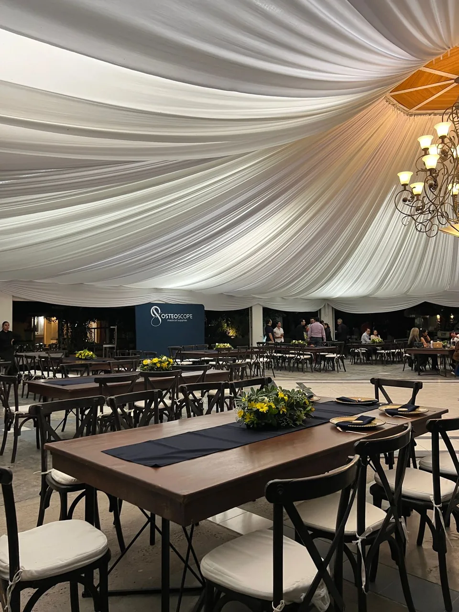
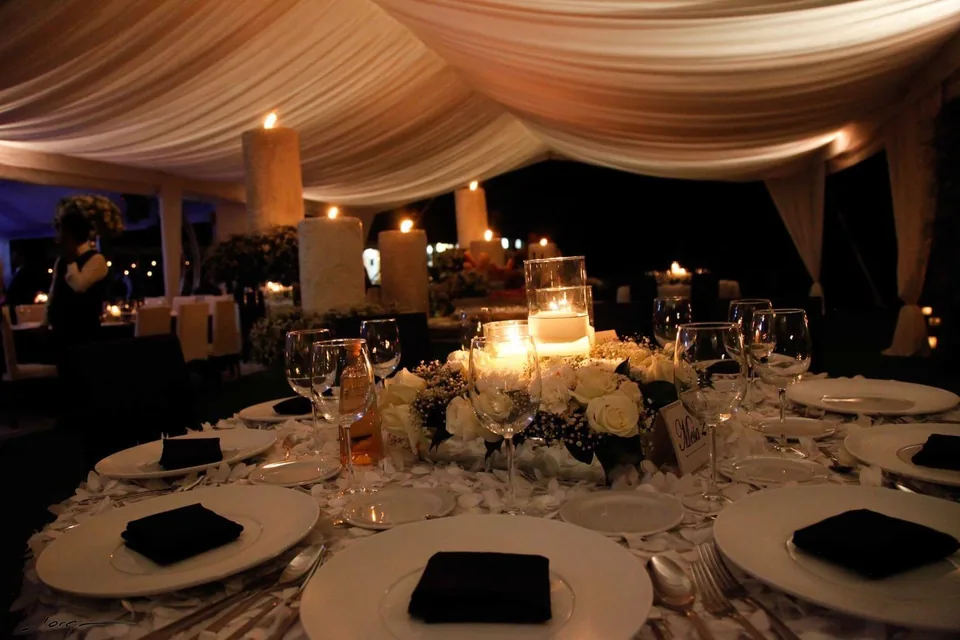
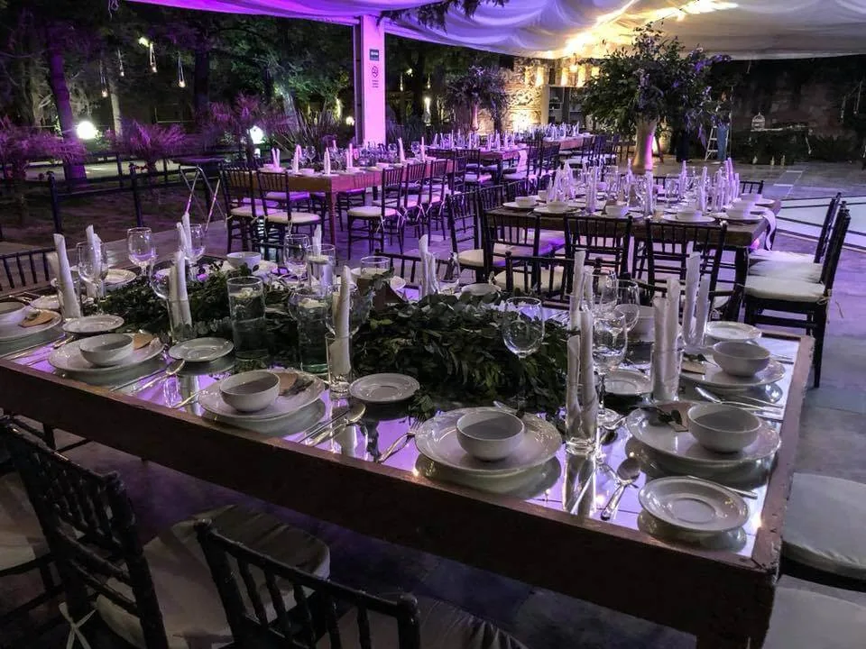
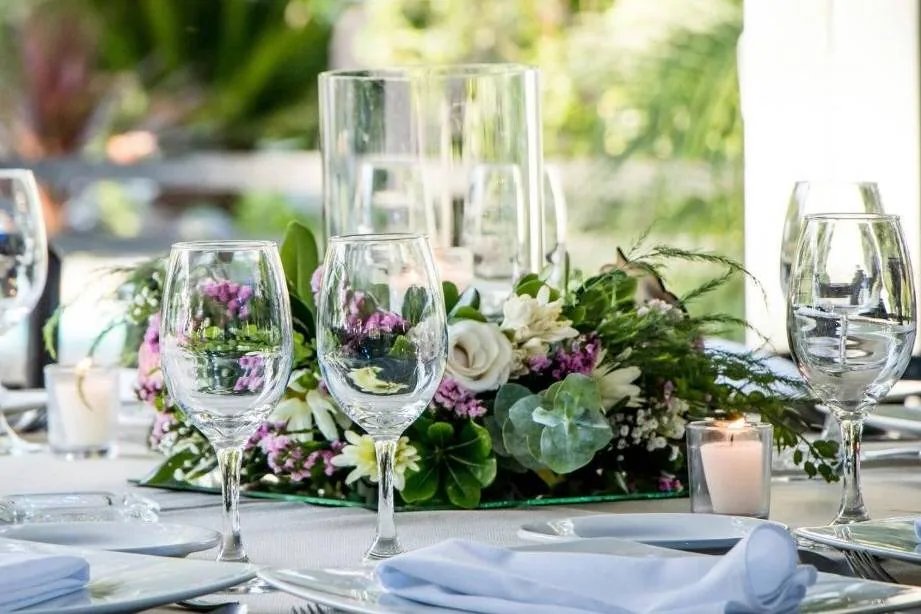
Lo que dicen las parejas
22/11/2023“Nos fue súper bien con el equipo. Trabajamos muy a gusto, mucha disposición y apoyo en hacer de esta noche la mejor de nuestras vidas.”
14/02/2022“Excelente lugar y un servicio muy profesional. Cuenta con capilla, un jardín hermoso y el salón muy bien distribuido.”
22/06/2021 · 4.4“Buena opción para realizar eventos. Jardín hermoso, mobiliario excelente. ¡La comida deliciosa!”
02/11/2020“Muy buena atención en todo momento. Además de ser un lugar muy bonito, con espacios para diferentes momentos.”
Opiniones tomadas de la ficha de Eucaliptos en bodas.com.mx: 4.9 de 5, y el 97% de las parejas lo recomienda.
Hablar con el jardínVisítanos
Llámanos para agendar tu visita
Todo listo para completar
Pásanoslo por el mismo chat donde te llegó esta muestra.